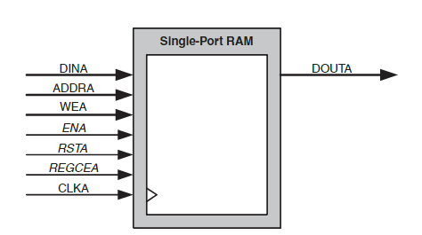
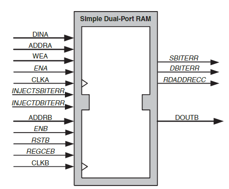
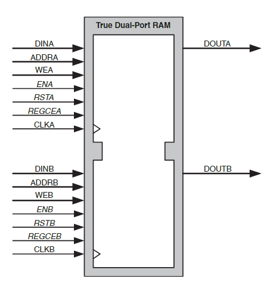
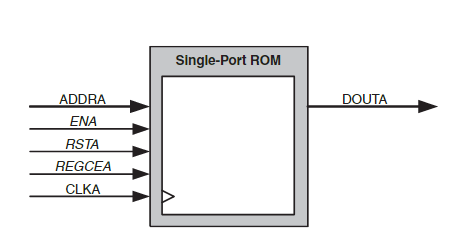
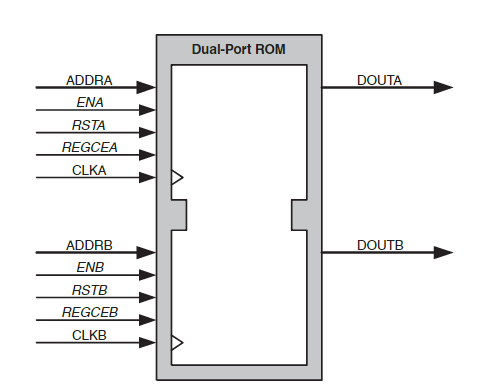
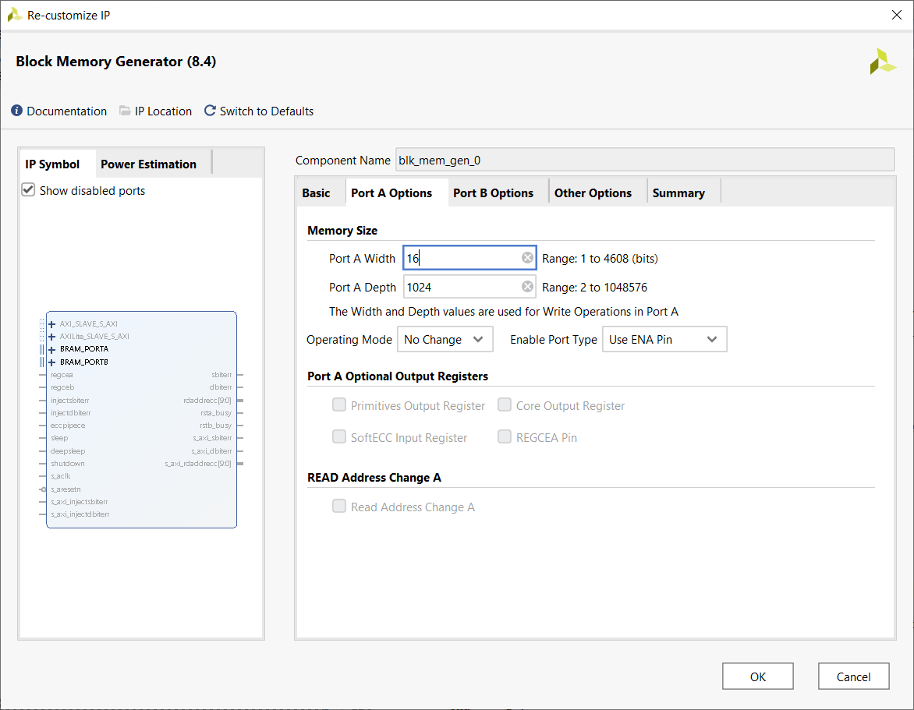
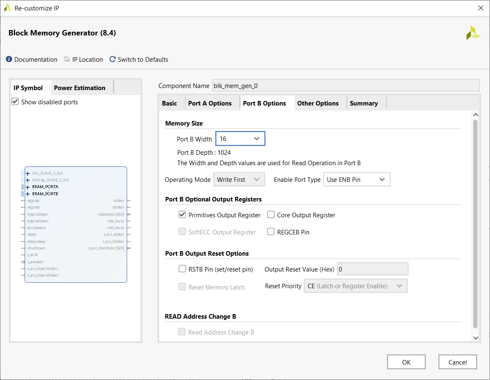
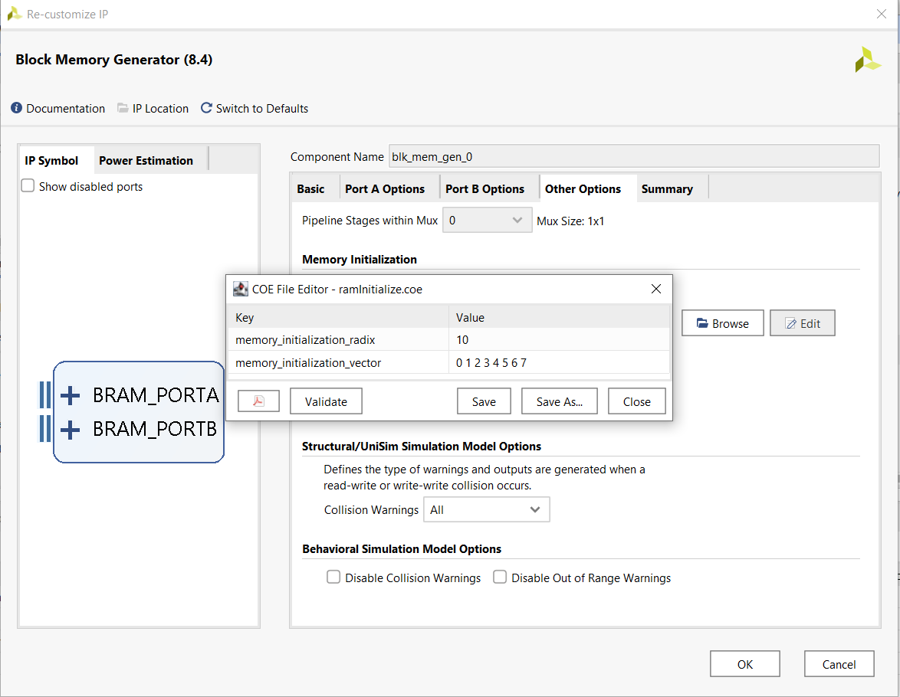

| Lecture | 26 |
| Class Objectives | Understand the I/O and behavior of the Xilinx Dual port RAM. |
| Handout | simpleDualPortRam.pdf |
| Code |
Block Memory Generator
The block memory generator uses the Xilinx block memory primitive to make arbitrarily wide and deep memories the support dual port access.- Single-port RAM - The Single-port RAM allows Read and Write access to the memory
through a single port.
 - Simple Dual-port RAM - The Simple Dual-port RAM provides two ports,
A and B, shown in the figure below. Write access to the memory is allowed
through port A, and Read access is allowed through port B.
 - True Dual-port RAM - The True Dual-port RAM provides two ports, A and B, as
illustrated in the figure below. Read and Write accesses to the memory are allowed
on either port.
 - Single-port ROM - The Single-port ROM allows Read access to the memory space through a single port.
 - Dual-port ROM - The Dual-port ROM allows Read access to the memory space through two ports.

| clka/clkb | Input | Port A Clock: Port A operations are synchronous to this clock. For synchronous operation, this must be driven by the same signal as CLKB. |
| addra/addrb | Input | Port A Address: Addresses the memory space for port A Read and Write operations. Available in all configurations. |
| dina/dinb | Input | Port A Data Input: Data input to be written into the memory through port A. Available in all RAM configurations. |
| douta/doutb | Output | Port A Data Output: Data output from Read operations through port A. Available in all configurations except Simple Dual-port RAM. |
| ena/enb | Input | Port A Clock Enable: Enables Read, Write, and reset operations through port A. Optional in all configurations. |
| wea/web | Input | Port A Write Enable: Enables Write operations through port A. Available in all RAM configurations. |
| rsta/rstb | Input | Port A Set/Reset: Resets the Port A memory output latch or output register. Optional in all configurations. |
| regcea/regceb | Input | Port A Register Enable: Enables the last output register of port A. Optional in all configurations with port A output registers. |
Lab 04 Requirements
In the next lab assignment you will build;d a FSM that acquires ADC samples from the AD7606 and stores them into a RAM. For this assignment we will only store the first two channels and ignore the data from channels 3-8. Hence, you will have 2 RAMs, one for channel 1 and one for channel 2.Concurrent with the acquisition of samples from the AD7606, your HDMI module will be reading out words of this same memory in order to draw the channel 1 and channel 2 wave forms.
Looking at the diagrams above, it's clear that we need a RAM with independent read and write ports. Since we need a single data out port, we can get away with the Simple Dual Port RAM.
Configuration of Simple Dual Port RAM
The BRAM needs to hold at least 1280 16-bit samples in order to display one screen's worth of data. I rounded down the number of samples to 1024 so that I could use a 10-bit address. If the display area of your oscilloscope is wider than 1024 pixels, you will need to make appropriate changes to the configuration shown below and use an 11-bit address.In order to instantiate a BRAM module in Vivado, you will need to open the IP Catalog, search for "BRAM" and the double click on "Block Memory Generator". You will then be guided through a wizard to create the block RAM. The following steps walk you through this process.
| TAB | Configuration | Description |
| BASIC |  |
The first tab allows you to select which of the 5 memory types you are going to instantiate. In our case you will select Simple Dual Port RAM. |
| PORT A OPTIONS |  | On the second you will describe with width and depth of port A on your Simple Dual Port RAM. Remember, if your oscilloscope display is wider than 1024, them increase the Port A Depth field to reflect your screen width. |
| PORT B OPTIONS |  | On the third tab you should specify the width of the read port. In our case, this should be exactly the same as the write port, 16-bits. |
| OTHER OPTIONS |  | For the upcoming lab, you will do nothing on this tab. However, for the example
that we will introduce later, you will want to have the RAM initialized. To
accomplish this check the "Load Init File" checkbox and then press the "edit"
button. In the COE File Editor pop-up type:
|
| SUMMARY |  |
Just verify that your design is close to mine. |
VHDL instantiation
Once you instantiate the BRAM, you will need to interface to it. In order to do this, you will need the entity description. Go to the Sources tab and open the blk_mem_gen_0 component. Inside you will find a vhd file, open it. At the top of the blk_mem_gen_0.vhd file, you will find the entity description. I've replaced
entity blk_mem_gen_0 IS
PORT (
clka : IN STD_LOGIC;
ena : IN STD_LOGIC;
wea : IN STD_LOGIC_VECTOR(0 DOWNTO 0);
addra : IN STD_LOGIC_VECTOR(2 DOWNTO 0);
dina : IN STD_LOGIC_VECTOR(DATA_WORD_WIDTH - 1 DOWNTO 0);
clkb : IN STD_LOGIC;
enb : IN STD_LOGIC;
addrb : IN STD_LOGIC_VECTOR(2 DOWNTO 0);
doutb : OUT STD_LOGIC_VECTOR(DATA_WORD_WIDTH - 1 DOWNTO 0)
);
END blk_mem_gen_0;
This is a simple dual port RAM with 8 words and width given by the constant
DATA_WORD_WIDTH.
Notice the unusual format for the write enable signal, it's a 1-bit long vector. If you want to hardwire
this signal to logic 1, then you will need to use double quotes "1". If you want to use a bit of the
control word to control this input then you will need to do something like
cw(WEB_CW_BIT_INDEX downto WEB_CW_BIT_INDEX). Weird, but it works.
Example Project
Now we turn to an example of how to implement and work with a BRAM. As far as I know, the circuit linked at the top of this web page does nothing useful; I just made it up as a challenging circuit to test your understand of the concepts presented in this lecture.The remainder of the lecture is devoted to the handout linked at the top of this page. We will use the VHDL code to add the names of the signals in the architecture. We will then explain how the control signals effect the operation of the RAM using the following timing diagram.